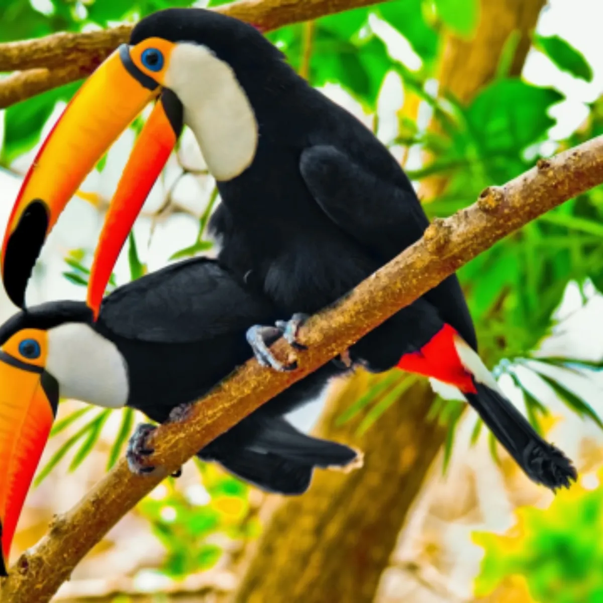
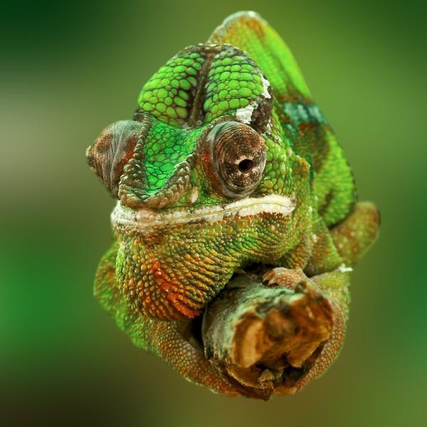

Peces
¿Qué es un pez? Desde algunos miembros de la familia de los ciprínidos que no superan los 8 milímetros de longitud, hasta el tiburón ballena, uno de los peces más grandes que habitan en el océano y que puede llegar a alcanzar los 12 metros, podemos encontrar una gran variedad de peces diferentes. Todos viven en un medio acuático y tienen un cerebro protegido por una caja craneal y una región bien diferenciada a modo de cabeza donde se albergan los ojos, dientes y otros órganos sensoriales. La mayoría de los peces son vertebrados cuyas vértebras se disponen protegiendo la médula espinal, respiran principalmente mediante branquias y tienen diversos pares de miembros en un número variable y en forma de aletas mediante los cuales se desplazan. También se trata de organismos incapaces de regular su temperatura corporal interna y cuyo cuerpo se encuentra cubierto de escamas destinadas a protegerles.

Mamiferos
Los mamíferos son un grupo de animales que engloba seres muy diversos: desde la enorme ballena azul al murciélago. Aún así, todos ellos comparten una característica común: tienen unas glándulas mamarias productoras de leche mediante las que alimentan a las crías. Todos son vivíparos a excepción del orden de los monotremas en el que se incluyen animales tan excepcionales como el ornitorrinco y los equidnas.
Anfibios
Su nombre proviene del griego y significa "ambos medios", pues su vida transcurre entre el medio acuático y el terrestre. Se tratan los ancestros de los anfibios del primer grupo de vertebrados que colonizó el continente y se adaptó a una vida semiterrestre. Se encuentran prácticamente en todas las regiones del mundo excepto en aquellas donde las condiciones climáticas son más duras como el Ártico, la Antártida y los desiertos más extremos. Los anfibios se caracterizan a diferencia del resto de vertebrados de pasar por diversos cambios y estadios morfológicos a lo largo de sus ciclos de vida.

Aves
Las aves son animales vertebrados generalmente adaptados al vuelo, aunque muchos también pueden correr, saltar, nadar y bucear. Algunos, como los pingüinos, han perdido la capacidad de volar, pero conservaron sus alas como vestigio. Las aves se encuentran en todo el mundo y en todos los hábitats y cuentan con una gran diversidad de tamaños, siendo el ave más grande es el avestruz que puede llegar a a alcanzar los 2,5 metros de altura, y el más pequeño el colibrí, con apenas unos escasos centímetros.
Aves
Las aves son animales vertebrados generalmente adaptados al vuelo, aunque muchos también pueden correr, saltar, nadar y bucear. Algunos, como los pingüinos, han perdido la capacidad de volar, pero conservaron sus alas como vestigio. Las aves se encuentran en todo el mundo y en todos los hábitats y cuentan con una gran diversidad de tamaños, siendo el ave más grande es el avestruz que puede llegar a a alcanzar los 2,5 metros de altura, y el más pequeño el colibrí, con apenas unos escasos centímetros.

Reptiles
La principal característica de estos animales vertebrados es que tienen la piel recubierta de escamas y tienen un origen prehistórico, aparecieron hace 315 millones de años aproximadamente. Han sido capaces de sobrevivir, entre otras cosas, gracias a la capacidad que tienen de controlar su temperatura corporal. Todos los animales de esta especie son ovíparos, pero algunos son carnívoros y otros herbívoros. Tienen un metabolismo lento por lo que los grandes ejemplares, como algunos cocodrilos o serpientes, son capaces de vivir durante un largo periodo de tiempo gracias a una comida abundante. Se pueden encontrar reptiles en todos los continentes excepto en la Antártida.
Reptiles
La principal característica de estos animales vertebrados es que tienen la piel recubierta de escamas y tienen un origen prehistórico, aparecieron hace 315 millones de años aproximadamente. Han sido capaces de sobrevivir, entre otras cosas, gracias a la capacidad que tienen de controlar su temperatura corporal. Todos los animales de esta especie son ovíparos, pero algunos son carnívoros y otros herbívoros. Tienen un metabolismo lento por lo que los grandes ejemplares, como algunos cocodrilos o serpientes, son capaces de vivir durante un largo periodo de tiempo gracias a una comida abundante. Se pueden encontrar reptiles en todos los continentes excepto en la Antártida.